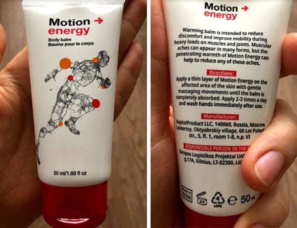
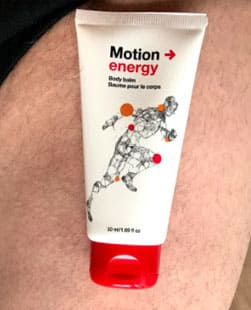

Мислех, че получавам инфаркт, но беше остеохондроза.
Ще ви разкажа как се отървах от неприятните симптоми, забравих за болестта и бързо се върнах към своя активен и пълноценен начин на живот.

1180 преглеждания
Усещате болка в лопатките и гърдите, дишането е трудно. Първото нещо, за което мислите, е сърцето. Няма какво да се разсъждава - трябва да се обадите на линейка. Това направеха колегите ми, когато ми се случи на работа.
ЕКГ показа, че сърцето ми е добре. Преминах пълен преглед в болницата, на който се установи, че имам гръдна остеохондроза. Не го очаквах! Спортувам, ходя на йога, спя на ортопедичен матрак. Но, явно напразно...
Експертите ми назначиха сложно лечение със специални препарати за защита на ставите, невролептици, успокоителни и препоръчаха да посещавам терапия с терапевтични упражнения. Следвах всички препоръки като отговорен пациент. В един от часовете за терапия направо се парализирах, блокирах и не можех да завъртя глава или да вдигна ръце. Всяко движение ми причиняваше болка. Като забеляза, инструкторът започна да ме разпитва за проблема. Когато чу диагнозата, се плесна челото:
Но, защо не казахте по-рано?! Упражненията са рисковани във Вашето състояние. Трябва първо да се премахне причината за блокажа. Този проблем може да бъде решен за седмици. Чак, след това можете, а и трябва да правите упражнения за тонус и здраве.
Избърсах сълзите си и погледнах с интерес към инструктора.
По целия свят хората с тази диагноза живеят активен, пълноценен живот и забравят за болката. Искате ли да Ви помогна? Повярвайте ми, болката ще изчезне завинаги и ще можете да спортувате без риск от нараняване.
Така разбрах за специалния гел, наречен . Разбира се, вече знаех за лечебната сила на евкалипта, но всъщност не вярвах. Всичко се оказа просто - гелът е много ефективен и се използва много лесно. Можете да го използвате по време на работа и никой няма да забележи. Невероятно е! Разбира се, помолих моя инструктор да ми помогне да си поръчам. Благодарение на него успях да купя гела с отстъпка – на половин цена. Добра цена за гарантирано здраве, а в курс излиза още по-изгодно.
Доставката на гела дойде след няколко дни. Първите ми впечатления бяха много приятни - има лека текстура и приятен мирис на евкалипт. Основното е, че съдържа само естествени компоненти: масла от евкалипт и канела и екстракт от джинджифил. Без химикали или синтетични компоненти.
Реших веднага да изпробвам гела. По препоръката на инструктора намазах врата си, точно, където ме болеше. Удивително е, че можех да усетя приятна топлина само за няколко минути, а напрежението изчезна и мускулите се отпуснаха. За първи път от известно време успях да спя цяла нощ, без да се събудя!

Мажех се с гел всяка сутрин и всяка вечер, болката отмина и усетих прилив на енергия! След седмица редовна употреба, всички неприятни симптоми бяха изчезнали.
Използвам гела повече от 2 месеца. През това време забравих за остеохондрозата и болката, започнах да посещавам фитнес отново и дори се записах на уроци по танци. Сега мога да кажа със сигурност, че е фантастично решение и ключът към доброто здраве. Между другото, може да се използва не само при наранявания и травми, но и преди тренировка - осигурява страхотна защита за мускулите на ставите, докато тренирате. Дори спортистите го използват!
Ако страдате от остеохондроза или друго хронично заболяване, послушайте моя съвет - поръчайте . Ще забравите за умората, лошото настроение и болката и ще се радвате на лекота, страхотно настроение и чувство, изпълнено с енергия. Това усещане ще ви изпълва всеки път, когато използвате гела. Ако се интересувате, ето линк към уебсайта на производителя. В момента те предлагат 50% отстъпка - побързайте да закупите продукта, за да подобрите здравето на цялото семейство.
Кой би си помислил, че такова просто гелче може да ви помогне да се отървете от такъв сериозен проблем? Отначало си мислех, че гелът е поредното безполезно нещо, но много бързо си промених мнението. Върши си много добра работата, дори по-добре от професионалния масаж. След като се намажа, усещам приятна топлина в тялото и изобщо не чувствам болка. Обожавам го!
Отговор СподелиЗапочнах да използвам гела наскоро, впечатлението е повече от добро. В миналото използвах продукт на друга марка, пълен болклук, нямаше ефект и миризмата му беше толкова противна и омирисваше дрехите и чаршафите, така че издържах към две седмици и го изхвърлих. Сега използвам и много ми харесва.
От няколко години страдам от болки във врата. Масажът не помага. Ще опитам тоиз , това е последната ми надежда.
Отговор СподелиПоръчах за баща ми. Той има артроза на коленната става, трудно успяваше да движи и стоеше, даже по-скоро лежеше по цял ден вкъщи. Но след 2 месеца, вече е на крак и се разхожда навън с внучетата!А дори обмисляхме операция ... Благодарим за чудото!
Определено ще го пробвам, кръста постоянно ме боли, не мога да търпя повече.
Отговор СподелиКато човек, който знае много за рехабилитацията от собствен опит, ще кажа следното: върши по-добра работа от всякаква физическа терапия. Без значение какви са проблемите - стави, сухожилия, мускули, ще ви помогне да ги преодолеете и да забравите за тях. Не отлагайте - грижата за здравето ви не търпи отлагане.
 Отговор СподелиКато пенсионер съм особено доволен от това. Спазми в гърба, болки в коляното, изкълчване на врата, напрегнати връзки ... Гелът е наистина универсален, можете да го използвате за масаж на всяка част от тялото си по всяко време. Не се налага прегледи по лекари,които само гледат да си вземат парите и да предписват разни скъпи медикаменти.
Отговор СподелиТова е невероятно. Винаги се чувствам изпълнена с енергия, след като го използвам. Достатъчно е да да намажа възпалената област и болката отшумява само за няколко минути! Мои роднини сега също го използват. Време е да попълним запасите с ! :)
Личният ми треньор ми препоръча да използвам , той каза, че това е най-доброто нещо за отпускане след упражнения. Така е, прав е човекът. Напрежението на мускулите отмина, отдавна забравих за болката и напрежението на мускулите. Тялото ми е в добра форма, физическото ми състояние е страхотно.
Отговор СподелиБих казала, че съм почти здрава, ако нямах стара травма след лошо падане (счупена ръка). Много ме болеше лакътя. Нямам време за масажи и фитнес зали, ето защо е голямо откритие за мен. Мажа се с гела всеки път, когато усетя някакъв дискомфорт и след това се чувствам страхотно. Забравих за старата травма и дори мога да натоварвам увредената си става! Страхотно е когато усещаш, че отново можеш да живееш както преди!
Научих за благодарение на часовете по йога - инструкторът препоръча да го използваме преди тренировка и при наранявания. Тази препоръка се оказа много полезна - по време на занятията повредих рамото си. ме спаси! Този продукт си заслужава всяка стотинка. Невероятно е, че нещо толкова просто е толкова полезно.
След преглед, специалист ми препоръча да премина терапевтичен масажен курс, който се оказа много болезнен. Опитах два пъти и ревах от болка, след което се отказах. Разбира се, започнах да търся някаква алтернатива. И намерих - това е гелът : реши проблема ми само за седмица. Сега го държа в комплекта си за първа помощ и го използвам всеки път, когато изпитвам дискомфорт.
Отговор Споделие истинско чудо. Болката в гърба изчезна. Ако работите на бюро или вършите тежък физически труд, гелът е задължителен за домашната аптечка.
Интересно нещо, много искам да опитам
Отговор СподелиТоку-що поръчах гела. Наистина е с 50% отстъпка, благодаря! А, с поръчката на курс стана и още по-изгодно. Въпреки че, ако всичко, което хората казват е вярно, то и пълната цена си струва.
Отговор Сподели